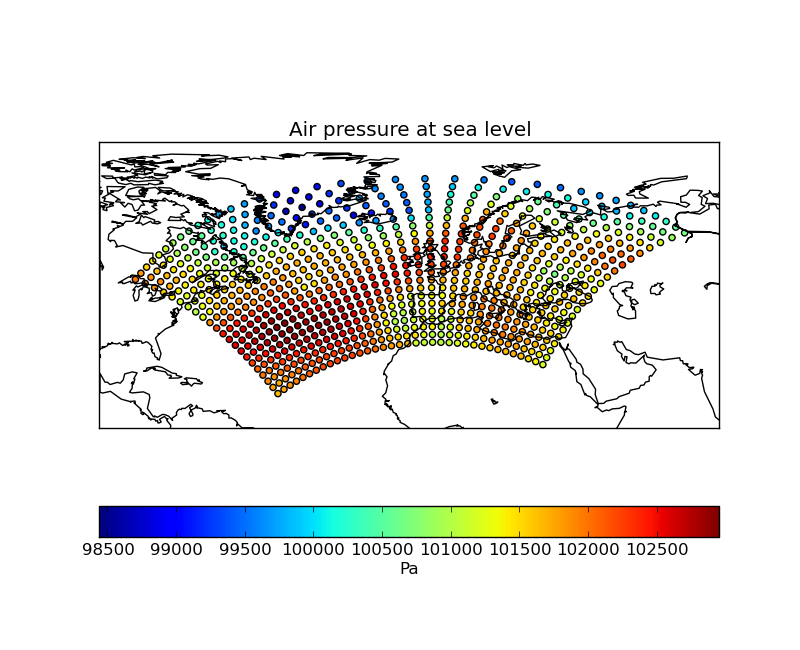
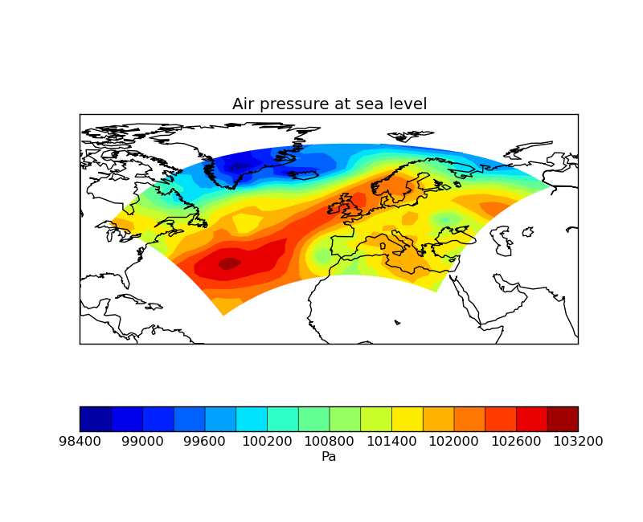
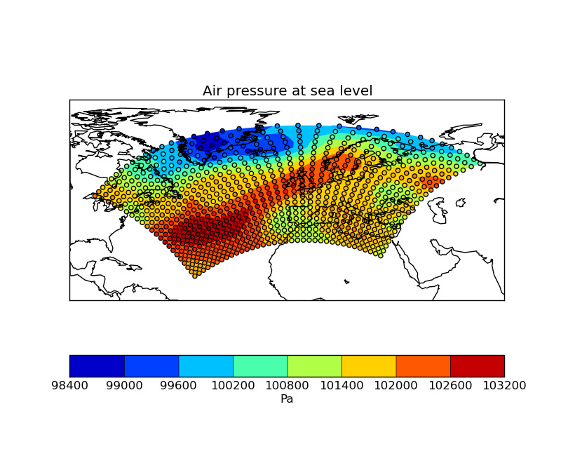
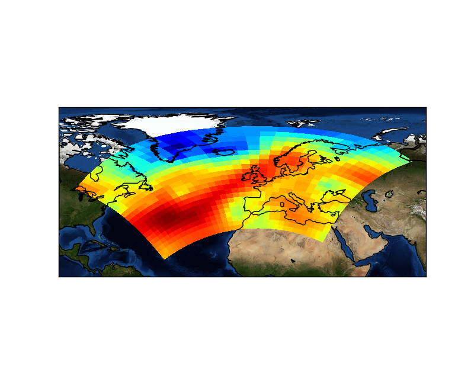

Iris 0.9
This example uses several visualisation methods to achieve an array of differing images, including:
- Visualisation of point based data
- Contouring of point based data
- Block plot of contiguous bounded data
- Blue marble image underlay




"""
Rotated pole mapping
=====================
This example uses several visualisation methods to achieve an array of differing images, including:
* Visualisation of point based data
* Contouring of point based data
* Block plot of contiguous bounded data
* Blue marble image underlay
"""
import matplotlib.pyplot as plt
import iris
import iris.plot as iplt
import iris.quickplot as qplt
import iris.analysis.cartography
def main():
fname = iris.sample_data_path('rotated_pole.nc')
temperature = iris.load_strict(fname)
# Calculate the lat lon range and buffer it by 10 degrees
lat_range, lon_range = iris.analysis.cartography.lat_lon_range(temperature)
lat_range = lat_range[0] - 10, lat_range[1] + 10
lon_range = lon_range[0] - 10, lon_range[1] + 10
# Plot #1: Point plot showing data values & a colorbar
plt.figure()
iplt.map_setup(temperature, lat_range=lat_range, lon_range=lon_range)
points = qplt.points(temperature, c=temperature.data)
cb = plt.colorbar(points, orientation='horizontal')
cb.set_label(temperature.units)
iplt.gcm().drawcoastlines()
plt.show()
# Plot #2: Contourf of the point based data
plt.figure()
iplt.map_setup(temperature, lat_range=lat_range, lon_range=lon_range)
qplt.contourf(temperature, 15)
iplt.gcm().drawcoastlines()
plt.show()
# Plot #3: Contourf overlayed by coloured point data
plt.figure()
iplt.map_setup(temperature, lat_range=lat_range, lon_range=lon_range)
qplt.contourf(temperature)
iplt.points(temperature, c=temperature.data)
iplt.gcm().drawcoastlines()
plt.show()
# For the purposes of this example, add some bounds to the latitude and longitude
temperature.coord('grid_latitude').guess_bounds()
temperature.coord('grid_longitude').guess_bounds()
# Plot #4: Block plot
plt.figure()
iplt.map_setup(temperature, lat_range=lat_range, lon_range=lon_range)
iplt.pcolormesh(temperature)
iplt.gcm().bluemarble()
iplt.gcm().drawcoastlines()
plt.show()
if __name__ == '__main__':
main()